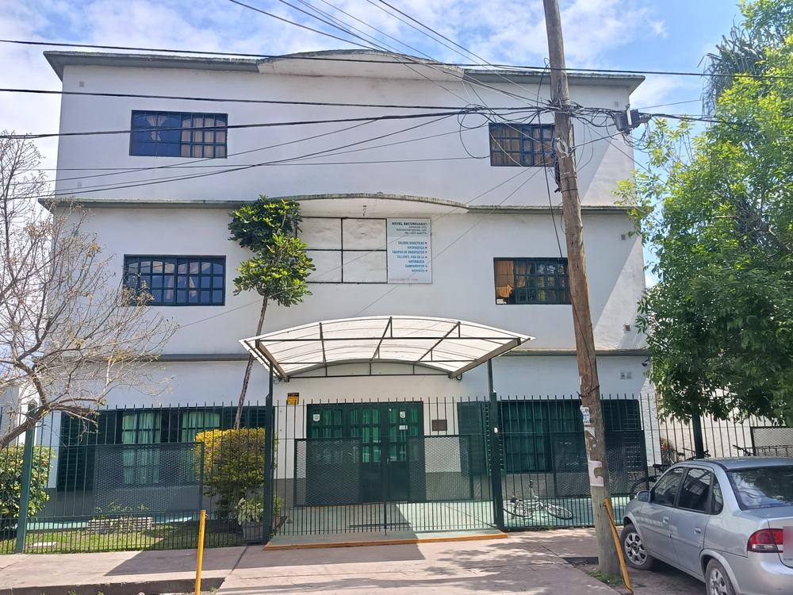
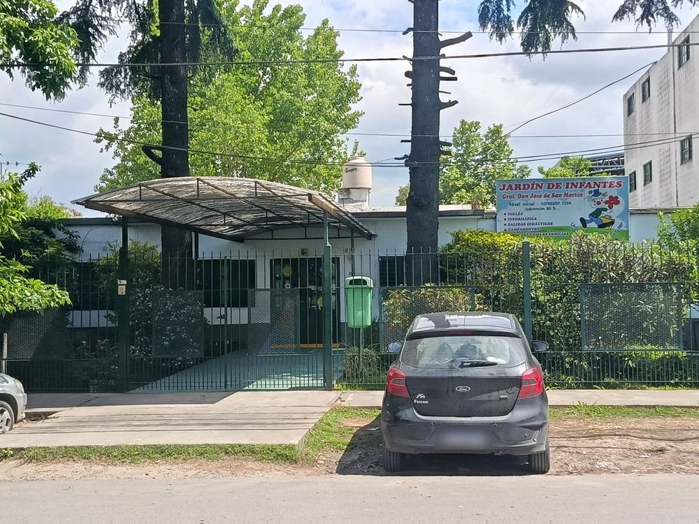
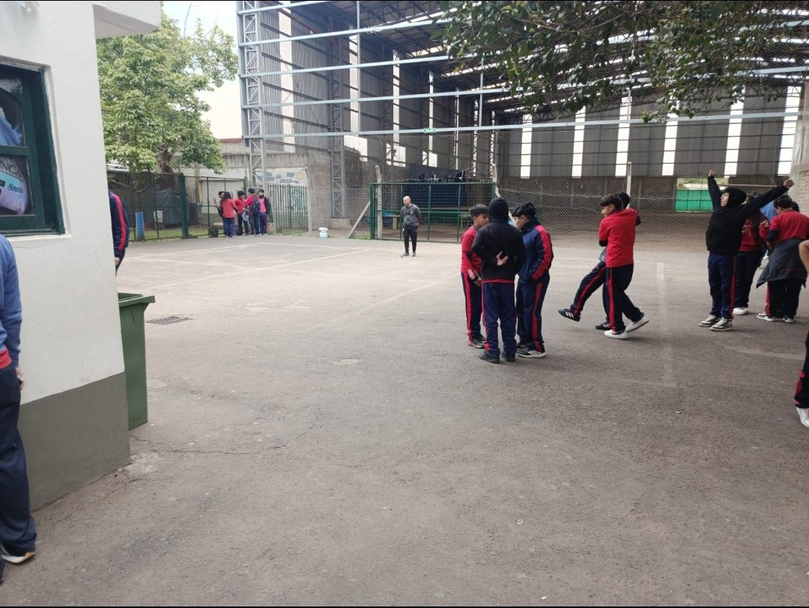
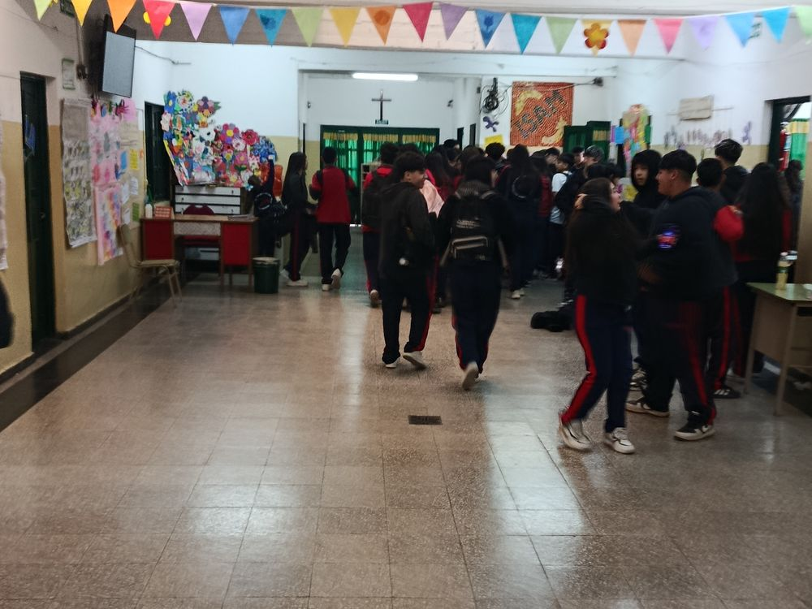

Excelencia académica
Contenidos actualizados, un cuerpo docente comprometido y un seguimiento personalizado del desempeño de cada alumno.
Fundado en 1979 · Moreno, Provincia de Buenos Aires
«Un lugar para Crear y Ser»
Desde 1979, el Instituto General Don José de San Martín acompaña a las familias de Moreno a lo largo de toda la escolaridad, desde el Nivel Inicial hasta la finalización del Nivel Secundario, con excelencia académica y una sólida formación en valores.
4,2 en Google · Ver opinionesLa Institución
El Instituto General Don José de San Martín es una institución educativa de Moreno comprometida con la formación académica y humana de sus alumnos. Inspirados en el ejemplo del Libertador, educamos para que cada estudiante egrese preparado para los estudios superiores, el mundo del trabajo y la vida ciudadana.
Contenidos actualizados, un cuerpo docente comprometido y un seguimiento personalizado del desempeño de cada alumno.
Equipos de orientación y un vínculo cercano con las familias en cada etapa de la trayectoria escolar.
Respeto, responsabilidad, compromiso y solidaridad como fundamentos de la convivencia institucional.
Brindar una educación integral de calidad que promueva el desarrollo intelectual, ético y social de nuestros alumnos, en un ámbito de respeto, esfuerzo y compromiso con la comunidad.
Ser una institución de referencia en Moreno, reconocida por la formación de personas críticas, creativas y solidarias, capaces de construir su propio proyecto de vida.
Edificios propios en Avellaneda y Ruta 23, Moreno.




Reseña histórica
El Instituto General Don José de San Martín abrió sus puertas en 1979 con el propósito de ofrecer a las familias de Moreno una educación de calidad, cercana y comprometida con la comunidad. Desde entonces, su labor se guía por un lema que conserva plena vigencia: «Un lugar para Crear y Ser».
A lo largo de más de cuatro décadas, la Institución ha crecido junto a la ciudad, incorporando niveles, espacios y proyectos, sin apartarse de aquello que la define: el trato personal, la exigencia académica y el compromiso con la formación integral de cada alumno.
Hoy, generaciones de familias de Moreno confían en el Instituto. Numerosos egresados eligen nuevamente la Institución para la educación de sus hijos, testimonio de una trayectoria construida con dedicación y continuidad.
Propuesta educativa
Un proyecto pedagógico continuo que acompaña a los alumnos desde sus primeros pasos en el Nivel Inicial hasta la finalización del Nivel Secundario.
Un ámbito cálido y estimulante donde los niños aprenden a través del juego, la exploración y la expresión, dando sus primeros pasos en la vida escolar.
De 1.º a 6.º grado. Alfabetización, pensamiento matemático y ciencias, con Informática e Inglés desde primer año y un seguimiento cercano de cada alumno.
De 1.º a 6.º año. Bachiller con orientación en Economía y Administración o en Ciencias Sociales.
En el Ciclo Superior, cada alumno elige la orientación que mejor se ajusta a sus intereses y proyecto personal.
Contabilidad, gestión de las organizaciones, economía y emprendimientos. Una base sólida para carreras en ciencias económicas y para la inserción en el mundo del trabajo.
Historia, geografía, sociología y formación ciudadana. Un enfoque crítico para comprender la realidad social y participar activamente en ella.
Actividades que enriquecen la formación de los alumnos en todos los niveles.
Por qué elegirnos
Una institución con historia y arraigo en Moreno, elegida por generaciones de familias.
Inicial, Primario y Secundario: toda la escolaridad en una misma institución, con un proyecto pedagógico continuo.
Economía y Administración o Ciencias Sociales: un título que habilita para los estudios superiores y el trabajo.
Admisiones
El proceso de admisión se desarrolla en tres etapas. La Secretaría acompaña a cada familia durante todo el trámite.
Comuníquese con la Secretaría para conocer la disponibilidad de vacantes y los requisitos de cada nivel.
Se coordina un encuentro con el equipo directivo para conocer la Institución y su proyecto educativo.
Presentación de la documentación requerida y confirmación de la vacante.
Horario de atención de Secretaría: Lunes a viernes, en horario escolar.
Contacto
Para consultas institucionales, administrativas o sobre el proceso de admisión, puede comunicarse a través de los siguientes medios.